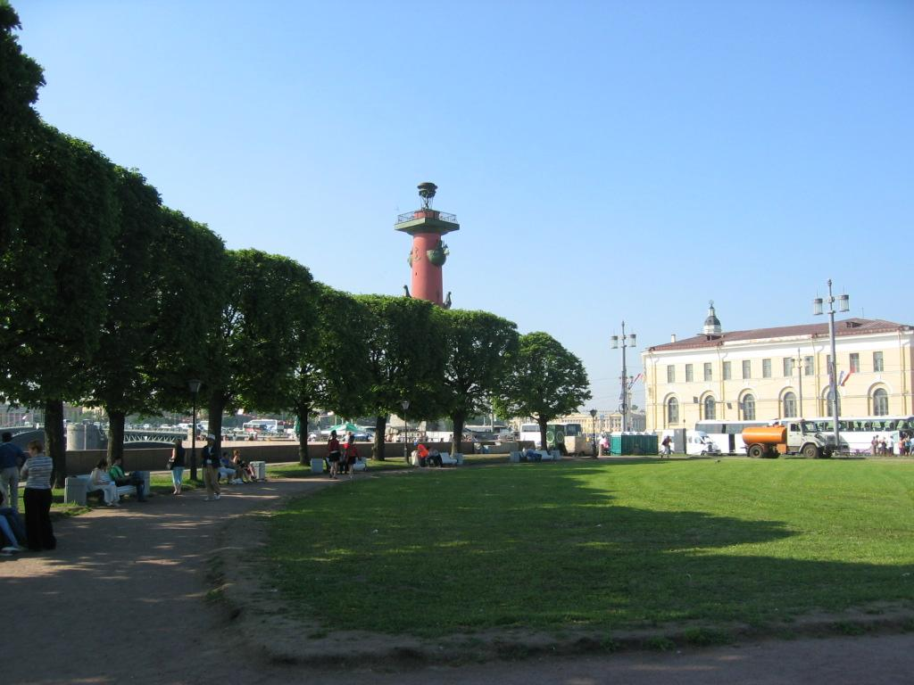

La Strelka ("Petite flêche"), pointe orientale de l'Ile Vassilievski était l'ancien
centre du Pétersbourg du commerce. Des colonnes rostrales (érigées en
1810 par Thomas de Thomon) et un Musée de la Marine rappellent cette
ancienne vocation de cette partie de la ville qui rassemble aujourd'hui des
institutions académiques comme l'Académie des Sciences et l'Université.

De cet endroit, on a une belle vue sur la Forteresse Pierre et Paul, et,
particulièrement pendant les "nuits blanches" et les fêtes de fin d'études des
lycées, on y voit des choses insolites...
|